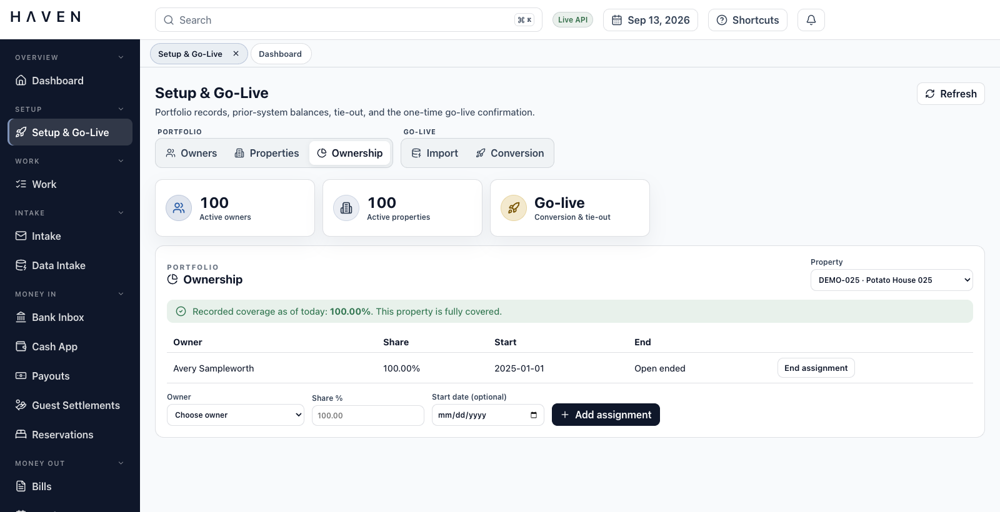
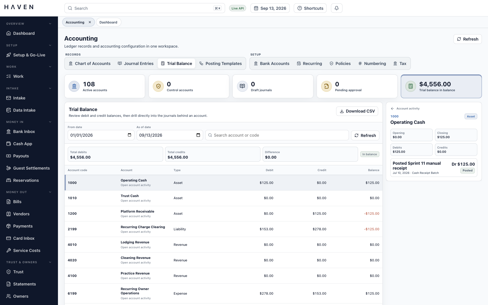
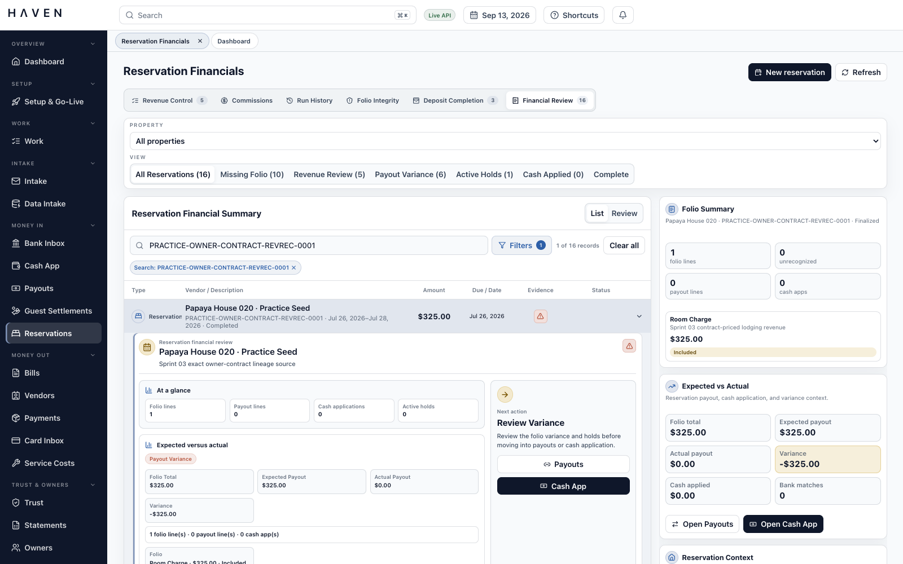
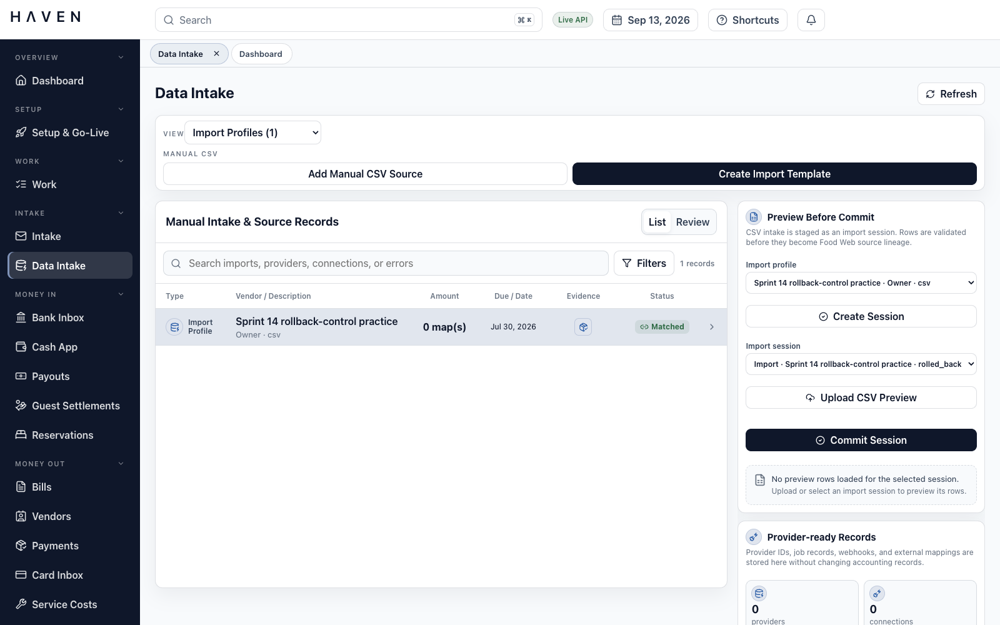
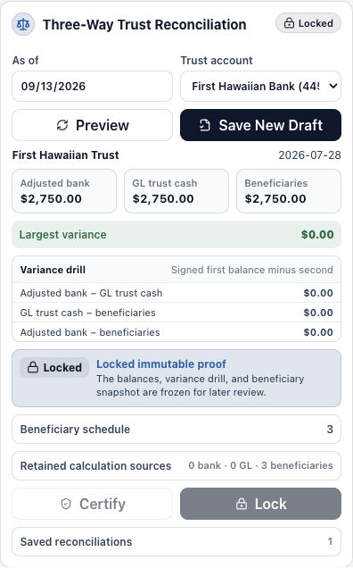
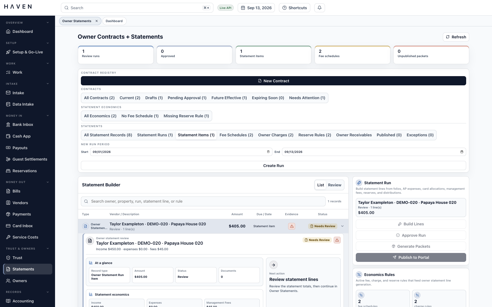
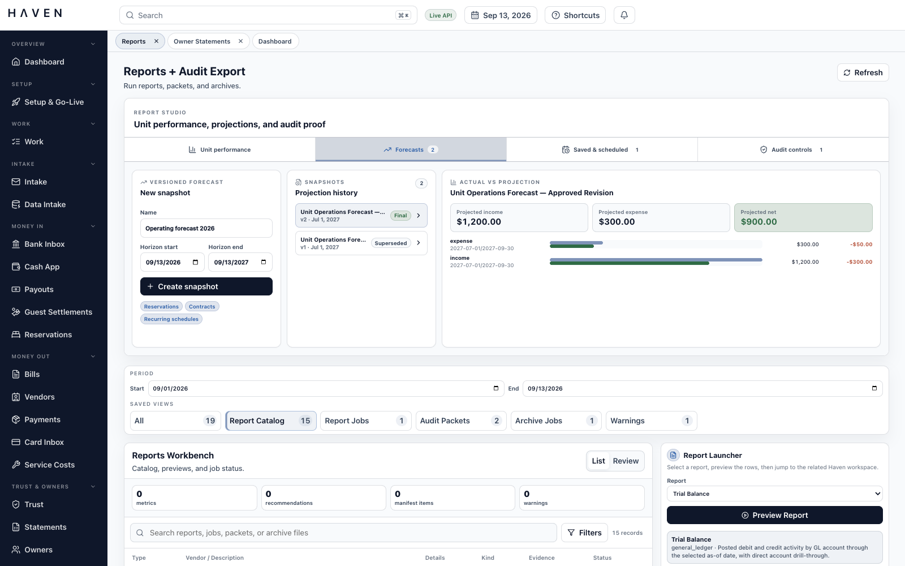

Keep your place in the work.
Open the detail behind a bill, balance, or reservation, then return to the queue without losing the surrounding task.
The numbers are only part of the work.
HAVEN is an accounting platform for property management teams. It connects property and owner records, contracts, bills, and reservation finances with the general ledger, trust balances, and owner statements. I’m building it so a team can see whose money it is, why a calculation applies, and what still needs attention.
 Prototype · Synthetic demonstration data
Prototype · Synthetic demonstration data
The dashboard brings bills needing attention, workload, and cash activity into view at the start of the day.
The modules below are implemented in the development build and are still being tested and refined. Screenshots show the running application with synthetic demonstration data. Select an image to view it at full size.
A vendor asks whether an invoice has been paid. An owner asks why a distribution is smaller this month. A bank deposit combines money from several reservations. Answering any of these questions means following the amount back to the records and decisions behind it.
My work in vacation rental accounting has made that search familiar. An invoice may be in one place, the approval in another, and the reason for an adjustment in someone’s memory. When a colleague takes over, they have to assemble the explanation again.
I designed HAVEN around those relationships. Properties, owners, contracts, and accounts provide the foundation. The workspaces connect them to the documents, transactions, and decisions that a team needs to review, complete, or explain the work.
The question behind HAVENWhat would it take to answer the next question without retracing all the earlier work?
Open the detail behind a bill, balance, or reservation, then return to the queue without losing the surrounding task.
Place the invoice, receipt, or payment evidence beside the record it supports, where it can inform the decision.
Make missing documents, incomplete account coding, and pending approvals visible before the team moves the record forward.
A bill needs a property and an expense account. A distribution needs an owner, a valid agreement, and enough available funds. HAVEN maintains those relationships before the team begins processing transactions.
Property and unit records connect to individual or entity owners, with ownership percentages and effective dates. Incomplete coverage is visible. An owner or property can be deactivated while its historical records remain available.
Contract versions hold management fees, owner charges, reserve rules, and covered properties. Changes go through preview, approval, and activation. Statements and revenue lines retain the version used. Missing or overlapping coverage creates an exception to resolve before processing.
Fiscal periods, close policies, tax settings, materiality thresholds, and document numbering are maintained together. Policy changes retain their approval history, and issued document numbers are not reused.
Opening conversion stages bank cash, ledger trust liabilities, and individual owner trust balances alongside unpaid bills, open receivables, and outstanding bank items. It checks that the trust totals agree before confirming the starting point and creating opening records.

The general ledger organizes posted debits and credits by account. HAVEN’s General Ledger Desk lets the team maintain those accounts, prepare adjustments, and investigate the entries behind a balance.
Accounts can be created, searched, edited, deactivated, or replaced while prior entries remain traceable. Posting rules control which accounts accept ordinary entries and which require a designated accounting workflow.
Manual journals carry property, owner, reservation, and vendor context through review and posting. The trial balance opens into account activity and its journals. Corrections use linked reversals, preserving the original entry and the adjustment.
Posting templates define reusable accounting rules with effective dates, version history, and an approval step. A preview shows their accounting effect before use. Revenue and recurring-charge records retain the rule version used in the calculation.
Flat, percentage, per-stay, and per-night charges can be previewed, generated, reviewed, and posted. Missed periods remain visible for follow-up. Separate commission runs retain their rules, reservation assignments, calculation previews, and approval history.

The invoice-to-close pilot tests one route through the system using USD vendor bills. Approval records the decision to pay. Payment preparation creates the records for an external bank handoff. Matching and reconciliation then connect that work to the activity reported by the bank.
The team sends the payment through its bank, then imports a bank CSV into HAVEN for matching and reconciliation. Preparing a payment in HAVEN does not transmit the money.
The Bill Entry Desk shows the vendor, amount, due date, payment state, and review status in one queue. Search and filters help the team find missing documents or possible duplicates before opening a bill for closer review.

Expanding a row brings the account coding, totals, related records, and original invoice into the same view. A reviewer can split a cost between accounts, check it against the source, and continue through the queue.


Extracting an invoice number or amount can save another round of typing. It can also give an incorrect value the appearance of certainty. HAVEN keeps suggested fields beside the source document, with confidence indicators and a review step before the values are accepted into the bill.
Corrections retain the original value, replacement, reason, and reviewer. If extraction is incomplete or unavailable, the person reviewing the invoice can enter the values manually.
A reservation can generate rent, fees, taxes, deposits, refunds, and money owed to an owner. HAVEN’s reservation workspaces bring those amounts together so the team can distinguish what was charged, what was received, and what has been earned.
A folio is the reservation’s itemized charge record. Its review connects charges to payouts, receipts, bank matches, holds, and documents. Revenue processing uses the effective owner contract to determine when income is earned, such as arrival, checkout, nightly, monthly, or payment received, with a preview before posting.
Imported payout reports can be matched to bank activity and allocated across reservations and properties, including fees, refunds, and deductions. Cash application assigns the money received to open balances, with limits that prevent applying more than the receipt or the amount owed.
Advance-deposit schedules distinguish money received, income earned, and remaining obligations. Money received before it is earned remains a liability. Security-deposit work brings deductions, holds, refund deadlines, and retained notice documents into the same review.
Processor settlements connect gross receipts, fees, and the net bank deposit. Owner receivables track amounts still owed, applied receipts, how long balances have been outstanding, collection tasks, and refundable credits.
Completed service orders can be matched to vendor bills. Housekeeping costs can be allocated to the owner, business, guest, or an owner/business split, preserving the rule and source cost behind the allocation.

Scanned mail, card statements, and CSV files need different preparation. HAVEN gives each a review workspace and keeps the original source linked to the records created from it.
Pages can be grouped into individual documents inside the scan workbench, then converted into bill drafts, card receipts, or supporting records for an owner, property, or reservation.
Imported card transactions move through receipt review, account and property allocation, approval, posting, and statement reconciliation. Missing receipts remain visible, and the closed statement can include a supporting packet.
Owner and property CSV imports use reusable column mappings, row previews, and blocking-error review before creating or updating records. Import history and external references lead back to the source. Bank, card, and payout files use their own accounting import workflows.
One document can support several related records. Source history, required evidence, review decisions, and extraction corrections remain accessible as the work moves between queues.

Trust accounting tracks money held for owners and other parties. Part of a bank balance may already be committed to reserves, bills, guest deposits, or refunds. HAVEN keeps those obligations visible and saves the calculation used to decide how much an owner can receive.
Owner and property trust subaccounts retain balances and a history that cannot be rewritten. Funds checks deduct reserves, pending bills and refunds, and withholding. Active holds without an assigned amount separately block distribution eligibility until resolved.
Three-way reconciliation compares adjusted bank cash, general ledger trust cash, and the total held for beneficiaries. Certification requires zero variance. A saved beneficiary schedule preserves the balances used in that review, and locking protects the reconciliation from later edits.
Distribution runs bring owner items, property allocations, totals, evidence, and approval stages together. Saved calculations preserve the basis for each decision after the run is complete.
The API enforces approval requirements. Journals must balance before posting, and posted entries are protected. When an adjustment is needed, a linked reversal preserves the original entry and the correction.


This demonstration reconciles adjusted bank cash, ledger trust cash, and beneficiary balances at $2,750.00 each.
The locked reconciliation retains the $0.00 variance, beneficiary schedule, and calculation used for certification.
A warning is useful when someone can act on it. Team Work brings tasks, exceptions, approvals, and comments into a shared queue with the responsible person, priority, and status visible.
A missing contract, an unresolved payout difference, or a document awaiting review stays linked to the affected record. An assigned task or approval request gives the next person somewhere to continue. Global search and related-record navigation help them find the issue and its context.

An owner wants to understand the month. A colleague needs to close it. An accountant may need to examine it later. HAVEN gives each a view of the same underlying records, with supporting calculations and documents available for review.
Statement runs bring income, expenses, management fees, owner charges, reserves, and distributions through review, approval, and publication. Published lines retain the contract terms used. Owners can view statements and permitted documents in their portal, and upload material for the team to review.
Bank and card reconciliation, trust reconciliation, review tasks, supporting packets, and period locks organize the close. Unresolved differences and outstanding tasks remain visible to the team.
Reports cover trial balance, account activity, property income and expenses, reservation finances, payout differences, and trust balances. Saved views preserve useful selections. Forecast snapshots retain their sources and assumptions for comparison with posted results.
Period tax calculations, amendments, supporting documents, and remittance records can be prepared and reviewed together. Owner and vendor year-end workpapers retain source payments, withholding, identity checks, and correction history for external filing.
Report jobs support PDF, CSV, and JSON outputs. Audit packets collect supporting records; archive exports include a manifest listing the preserved files. Generated outputs remain linked to their jobs and source context.


A property links to its owners and contracts. A reservation links to charges, revenue, and receipts. A bill links to its invoice, payment, bank match, and reconciliation. HAVEN’s relationship graph makes those connections navigable, so a question about one record can lead directly to the records that explain it.
React and TypeScript provide the worktables, review panels, and document views. Shared components let people move between workspaces with familiar controls and access to the underlying records.
FastAPI and SQLAlchemy validate accounting operations. PostgreSQL also checks that journals balance and prevents changes to posted ledger lines, keeping these rules in force beneath the interface.
An outbox stores work for a background worker to claim and process. Claims can be renewed during long jobs. Retries are bounded, and exhausted attempts leave a visible failure state for affected document-generation jobs.
Full ledger exports include tabular data, a schema, control totals, and file hashes. A separate verification tool checks the package’s files and internal consistency, giving reviewers a way to examine the exported records.
The production configuration requires verified sign-in tokens and multifactor authentication. Organization checks and database row policies restrict which records each company can access.
API routes check the capabilities required for each action. The API, background worker, and database maintenance tasks use separate roles, so routine processing does not require permission to change the schema.
Version checks reject stale edits to bills and owner statements. Payment-batch and report-generation requests use idempotency keys: retrying the same keyed request can return its recorded result, while conflicting reuse is rejected.
Upload checks limit file types and sizes, inspect file signatures, and restrict active content. Temporary access links limit how long a document URL can be used.
Verification combines API and database checks for financial integrity, permissions, concurrent edits, and queued work with browser checks for sign-in, organization boundaries, and vendor creation. Full bill-to-reconciliation and statement journeys are not yet covered by that browser suite.
The part of HAVEN I care most about is what remains understandable after the work has moved on. A payment question may arrive weeks later. A colleague may take over a queue halfway through the day. The documents, decisions, and relationships need to make sense to someone who was not there for every step.
That is the standard I’m building toward: financial work that can be checked, explained, and continued. The invoice-to-close pilot gives me a focused way to test whether the wider accounting foundation holds together when someone has a real task to finish.
The build contains the modules described here, with workflows still being tested and refined. The invoice-to-close pilot uses USD bills, CSV bank imports, and an external payment handoff. Live bank and channel feeds, direct money transmission, and electronic tax filing are outside that pilot’s scope.